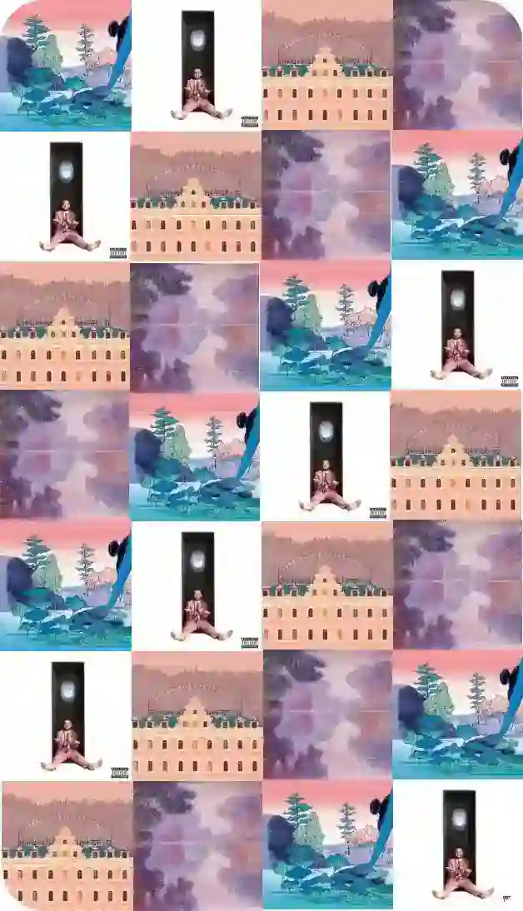

Simple rapper known for his colored songs that finally hide a difficult lifestyle.
Understand artists behind their work

Remini
scence
You will find here the backstage of all selected achievements. Through a book, a place, a music and a movie, discover how genius and artistic culture are mixed.
What will happen in a few years to the situation of each creator in society? Ask yourself the right questions, appreciate and evolve.
If dream and reality could merge when viewing a screen, it is towards Wes Anderson that we would direct our eyes.
Legend, humour, comfort and beauty, this author's writing just makes for a good time.

The XIX and XXth century’s impressionist and his pieces of art continue to live at the Orangerie museum of Paris
The evolution of new technologies gives way to a real debate about the utility of art practices.
They deserve that we talk about us like we talk about their productions.